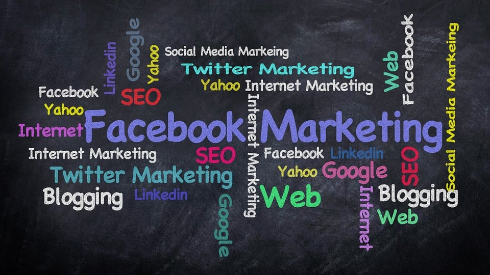
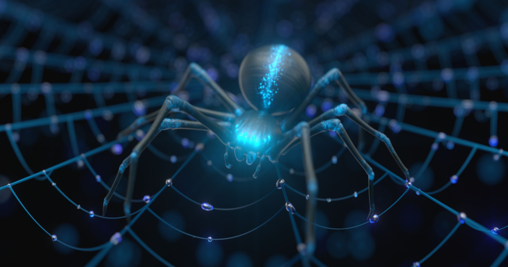
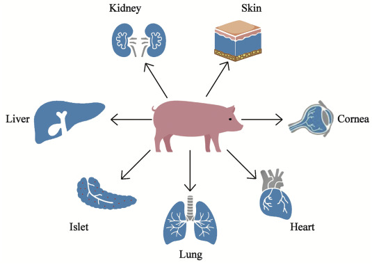

"Technology and its impacts"
Technology can be defined as the way we execute the discoveries of science around the world and use it with our own needs. Technology is a general term used to refer to the different tools, machines and equipment we use in everyday life. These tools and equipment have been invented by man to make the tasks faster and more comfortable. Technology is basically our daily needs nowdays due to its features and facilities. There always have been and always will be arguments for and against the uses of science and technology. One cannot sit in judgement and say that science has benefited man or taken him to the verge of destruction. There obviously are plenty of advantages and disadvantages of science and technology.This the age of science as it has changed the entire world by its congenial and comfortable ways of living. There is always a positive and negetive sides of something. Technology basically is one of them.
Impacts:
No doubt technology has made our life more comfortable, beautiful and trouble free. The blessings of science are too many to count. Technology has basically
conquered time and distance. There are technology and its features everywhere we go. From transportation to accommodation it's everywhere.
Technology affects almost every aspect of 21st century life, from safety to healthcare, socialization ,access to food and productivity.
The power of the internet has enabled global communities to form, and ideas and resources to be shared more easily anywhere around.
However, the overuse of some technology has made our world to a decline in mental health, increased social division privacy concerns and violence.
We take technology for granted everytime even when it has provided us all the basic needs form making a tea to sleeping peacefully in our bed.
According to my brain, there are mainly 6 ways technology impacts our lives:
1)Transportation
2)Health and fitness
3)Marketing and transactions
4)Privacy protection
5)Socialization
6)Education facilities
1) Transportation
Nowdays almost everyone around the globe owns something for the transportation purpose. It can be a car,bike,bicycle or even a private jet. Due to these inventions our day to day lives have been much easier and effecient. "Let's go invent tomorrow instead of worrying about what happened yesterday" truly reflects todays modern transportation facilities. Overall we can say that in this 21st century without technology mobility wouldn't have been a thing and life wouldn't had been easier as it is now. Technology has surely improved the mobility in this 21st century.
2) Health and fitness

As for health,technology helped alot in this field.In this 21st century as the technology has been increasing day by day diseases have been increased alot everywhere around the globe. People are getting sick and being affected by different kind of illness.This is where technology comes in rescue.There are different advanced technology that are being used for curing these diseases.EKG/ECG Machine,Anesthesia Machine,Sterilizers are some of advanced technology being used nowdays.These equipments help us to be cured anytime and anywhere whenever we need.Hospitals and different health organizations are also being advanced by using these technologies. we can say that technology has helped us to be fit and healthy.
3) Privacy protection
Privacy has been probably everyone's main concern nowdays.As the technoloy is becoming more and more advanced people are facing privacy disturbance.Human beings value there privacy and the protection of there persoal space of life. They certainly do not want their personal information to be accessible to just anyone at anytime. Recent advanced technology threatens privacy and have reduced the amount of control over personal data and open up the possibility of a range of negative consequences as a result of access to personal data. But at the same time these technologies have helped to secure our belongings and be aware from cyber crimes and malwares. Virtual Private Network(VPN), Antivirus Softwares, data encryption, Firewalls, Ips are some of advanced technologies consistently helping us for our privacy concerns.Nowdays there are different kinds of courses for students like Networking, Computing, Ethical hacking, cyber protection etc which helps in protecting our privacy. Students could learn these skils and help thereselves and others aswell to be secured and safe with their personal belongings.
4) Marketing and transactions
Technology plays a very important role in terms of marketing.In this modern era marketing is all digital rather than physical. People have become more intelligent and sharp minded. We promote our business through different technologies and its sources. Social medias, digital newspapers, advertisments are some of them. This has helped people buy and sell products easily and more conveniently.Technology has also helped us in transactions of our purchases. We are gradually evolving and switching into online payments and cards rather than using cash. This helps in enviroment protection also which is a plus point. Conveniency is always there in this method of payment as it is more secure.Therfore, technology has changed our way of living.The marketing process begins with knowing the customers desires until a business can create a product or offer a service that can meet and satisfy them. Happier customers lead to higher profits.Good business makes people happy. When more people are happy, the better society becomes.
5) Socialization

Technology has enabled the growth of social medias to do business and more. Mediums such as telecommunications, instant messaging, social networking sites, or the World Wide Web have become an crucial part of our lives. Businesses can now interact with their customers easily and provide their products and services in a much better and easier way with the help of modern technology. As the technology is advancing day by day, we have revolutionized the ways in which we humans communicate to each other. Technology lends itself well to social media and is now used in messaging systems, telecommunications networks, Voice over Internet protocol communications, videoconferencing, online chats, interactive message boards, websites, blogs and most other forms of social interaction. We can talk more effeciently with our relatives and friends due to this technology. We can get different kinds of news from all over the world using social medias, televisions, and different other information sources. Thanks to technology each person with marginal views can see that he is not alone. When these people find one another via social media, they can do things like creating memes, publications, and entire online worlds that boosts their worldview, and then break into the mainstream of life. This really helps in changing our thougts about negative impacts of technology if we use it in correct manner.
6) Education facilities
Technology has impacted almost every aspect of life today, and education is no exception. In some ways, education seems much the same as it has been for many years but the fact is that the way people are getting the education or we can say the source is being revolutionized. Nowdays almost everyone is familier with google. It is an platform where we can get the answers of almost everything. Technology helps to gain the education by different sources like webs, online searches, online tutors, and many more virtually. AI(Artificial Intellegence) is one of the primary example of how technology has changed education levels. AI has done alot in education feild as we are getting modernized and education is expanding day by day.Technology has also begun to change the roles of teachers and learners. Nowdays different kinds of technology applications such as smartphones, laptops, computers are being used to provide education to the students as it is more easier and convenient.Technology in education helps prepare students with the career and technical skills they need to be successful today and in their near future. Overall technology plays a vital role in terms of education in this 21st cetury.
"Pros and cons of technology" by Jared Leto and Walter Isaacson:
PROS:
As i've said earlier technology has a great impact upon our life and the way we live. It has many advantages to be counted. These advantages are there to make our life easier and more comfortable.
Some of the advantages of technology are listed below :-
- Better communication
In earlier times, communicating with a person belonging to a different part of the world was difficult. Think about it! Think back to the time when people had to communicate using pigeons or letters, something that took
days or weeks! with a person sitting in another corner of the world, all thanks to technology. Nowdays almost everyone has a smartphones around the world and its easier nowdays to communicate with our friends and families
far away from us with the help of these technologies.
- Saves time and money
A very important advantage of technology is that it saves time as well as money. As we are able to complete a task in lesser time, we can utilize the time saved for other important activities. With the help of technology a lot
of activities such as cooking, cleaning, working, commuting are accomplished faster. Advertisements are being digital and less time consuming as well, overall technology has a big impact on how all the basic tasks are well
managed and developed nowdays.
- Reduces cybercrime risks
The biggest benefit of technology is to the cyber world. AI (Artificial intelligence) algorithms are qualified to detect a change in unique from the normal pattern. Implementing AI to detect is still at an early stage, but technology,
one can expect to prevent it. Hence the chances of getting a cyber-attack are reduced. AI has made our living more comfortable and quality of life is well defined.
- Improves efficiency for Business
The best advantage of any technology is that it increases the efficiency of a business process.
We can perform more tasks in less time. From shared drives to emails, communication, execution and implementation of a lot of business processes has become swift and hassle-free. Business nowdays are being
more modernized and easier, all thanks to technology.
CONS:
If there is a positive side of something, there always is a negative side aswell. Same with technology, there are some negative impacts of technology in our society.These negative impacts of technology is being listed by observing
the current scenario in our lives around the world. Some of the disadvantages are listed below:-
-Extreme dependability
With each passing day, we are becoming more and more dependent on technology for almost every task without even realizing it. A common example of this is using a cab service. Another example is using GPS to know the
directions of any desired location. A lot of people today do not bother learning or memorizing directions because they depend on Google Maps for it. In a lot of ways, thats not a good path we are going down.
-Expensive
Although technology is already a part of many peoples lives, there are still some people out there who cannot afford some technologies. Many technologies that are being used by the organizations are expensive. As a results,
one of technologys biggest cons is that it can only be used by those who can afford it.
-Malfunctions
The biggest disadvantage of technology is that all are machine driven. And a minor lapse in the functioning can create a situation that cannot be controlled. So, a minor malfunction may cause a complete failure which can
cost a human life as well.Now that we have discussed how technology benefits us and also the disadvantages of technology today, we are confused about whether to perceive it as a boon or bane. Only time can validate the future of technology.
We also think that as global citizens, we have a responsibility of allowing certain technologies into our lives.
-Shortage of jobs
With technology, the efficiency of a task has increased tenfold and this is the reason why the technology might be able to replace humans soon. An increase in technology is going to ensure that tasks that humans could do
earlier can now be achieved by machines and technology. Thus, creating a shortage of jobs.Nowadays even organizations prefer technology that is capable of doing tasks more efficiently than humans. Thus, with the rise of technology
humans can be replaced by algorithms and robots, but in education, it is still a long way off. After all, a machine will not be able to write and proofread a thorough text like a professional essay writing service.
"Why IT is importatnt to you?"
Information systems are important to you for a variety of reasons. First, information systems and information technologies are integral to your life. Second, the IS field offers many career opportunities. Finally, all functional areas in
an organization utilize information systems. Information Systems and Information Technologies Are Integral to Your Lives
There are many examples of how information systems and technologies are embedded in your lives. For example, think of all the things you can do online.
- Register for classes.
- Take classes, and not just classes from your university. Access class syllabi, information, PowerPoints, and lectures.
- Research class papers and presentations.
- Conduct banking. Pay your bills.
- Research, shop, and buy products from companies or other people.
- Sell your stuff."
- Search for, and apply for jobs.
- Make your travel reservations (hotel, airline, rental car).
In addition to all the activities you can perform online, there are other examples of how information systems and information technologies are essential to your daily living. For ex- ample, you may not use a regular wireline telephone.
Rather, you use a smartphone that has a calendar, an address book, a calculator, a digital camera, and several types of software to download music and movies. This phone enables you to seamlessly switch between different wireless modes
(Bluetooth, Wi-Fi, cellular, and/or Wi-Max) to communicate by voice, e-mail, instant messaging, and text messaging.
Going further, you have your own blog, and you post your own podcasts and videocasts to it. You have your own page on FaceBook. You make and upload videos to You Tube (now Google Video). You take, edit, and print your own digital photographs.
You "burn" your own custom-music CDs and DVDs. You use RSS feeds to create your personal electronic newspaper. The list goes on.
"Future of Technology"
Technology moves at a rapid pace these days. It can sometimes feel like every single day there is a new technology that is going to revolutionise the future. But with so many massive technological upgrades happening all the time,
it is easy to lose track of the amazing ways the world is progressing. There are artificial intelligence programs writing poems from scratch and making images from nothing more than a worded prompt, there are bionic eyes, massive holograms
and food made in labs. All of this just scratches the surface of what is out there, so we've gathered the most exciting future technologies, listing them all below.
1.) Necrobotics
Sometimes new future technologies can offer amazing development, with the possibility of changing the future while also being incredibly creepy.
This is one way to describe the idea of necrobotics which, as the name suggests, involves turning dead things into robots. While this sounds like a plot to a creepy horror film, this is a technology being explored at Rice University.
A team of researchers turned a dead spider into a robot-like gripper, given the ability to pick up other objects. To achieve this, they take a spider and inject it with air. This works because spiders use hydraulics to force their version
of blood (haemolymph) into their limbs, making them extend. Right now this concept is in its infant stages, but it could mean a future where dead animals are used to further science.

2.) Xenotransplantation
The procedure of transplanting, implementing or infusing a human with cells, tissues or organs from an animal source - has the potential to revolutionise surgery.
One of the most common procedures performed so far is the insertion of a pig's heart into a human. This has now successfully happened twice. However, one of the patients was only alive for a few months, and the second is still being observed.
In these surgeries, the heart cannot be instantly put into a human, gene-editing needs to take place first. Certain genes need to be knocked out of the heart and human genes need to be added, mainly around immune acceptance and genes to prevent
excessive growth of heart tissue. Right now, these surgeries are risky and there is no certainty around success. However, in the near future, we could see xenotransplants happening on a regular basis, providing hearts or tissues from animals to humans in need of it.

3.) Intelligent exo-skeletons
Exo-skeletons have existed for years, both in popular science fiction and real life. But as the years have gone on, the technology has rapidly become more impressive.
Most notably in recent years, we have seen the technology now become more readily available for the young. The Atlas 2030 is described as the most advanced mobile medical exo-skeleton designed specifically for children.
While it is not commercially available yet, this technology could aid children in the future, offering a pediatric lower-body medical exo-skeleton. This could help children with severe neuromuscular diseases, cerebral palsy or spina bifida walk.

4.)3D printed bones
3D printing is an industry promising everything from cheap house building through to affordable rugged armour, but one of the most interesting uses of the technology is the building of 3D printed bones.
The company Ossiform specialises in medical 3D printing, creating patient-specific replacements of different bones from tricalcium phosphate, a material with similar properties to human bones.
Using these 3D printed bones is surprisingly easy. A hospital can perform an MRI which is then sent to Ossiform who create a 3D model of the patient-specific implant that is needed. The surgeon accepts the design and then once it is printed, it can be used in surgery.
What is special about these 3D printed bones is that because of the use of tricalcium phosphate, the body will remodel the implants into vascularised bone. That means they will enable the full restoration of function that the bone it is replacing had. To achieve the
best integration possible, the implants are of a porous structure and feature large pores and canals for cells to attach to and reform bone.

5.) Hydrogen planes
Carbon emissions are a huge concern when it comes to commercial flights, but there is a potential solution and it has received a lot of funding.
A £15 million UK project has unveiled plans for a hydrogen-powered plane. This project is known as Fly Zero and is being led by the Aerospace Technology Institute in conjunction with the UK government.
The project has come up with a concept for a mid-size plane powered completely by liquid hydrogen. It would have the capacity to fly roughly 279 passengers halfway around the world without stopping.
If this technology could be actualised, it could mean a zero-carbon flight with no stops between London and Western America or London to New Zealand with a single stop.